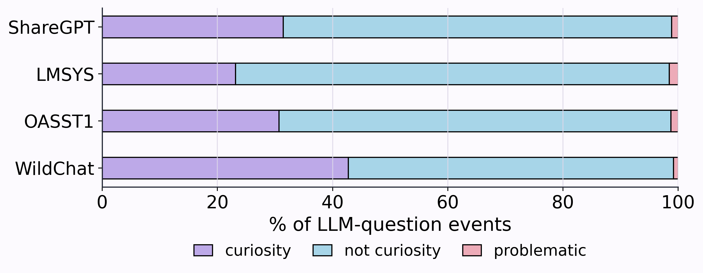
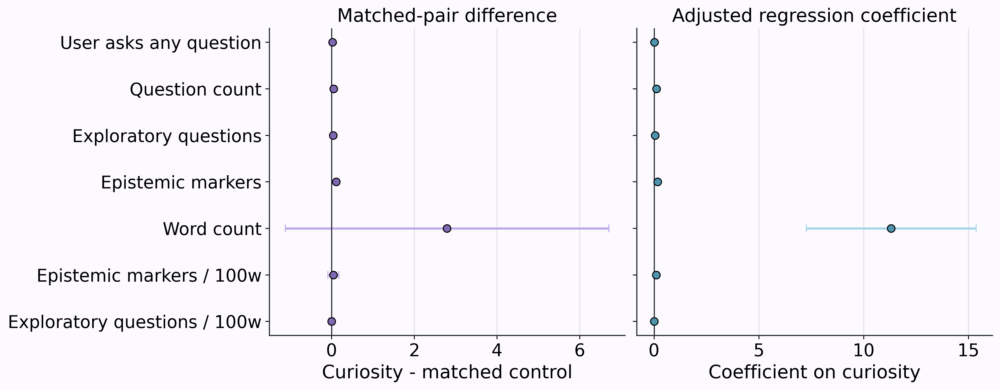
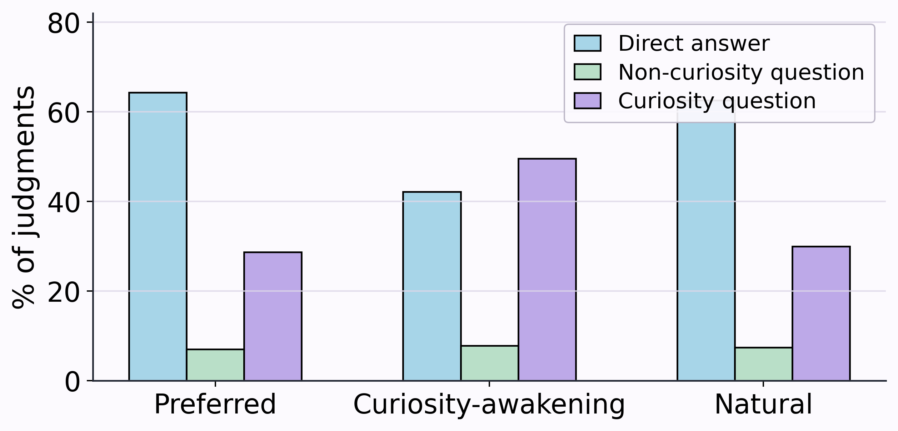

Curiosity-oriented
Opens an epistemic path
“What evidence would change your view?”
Model curiosity in the wild
Measuring Model Curiosity in Human–LLM Interactions
1 University of Michigan 2 PES University * Equal contribution
Not every question expresses curiosity. This work separates questions that move a task along from questions that surface gaps, test assumptions, and open new directions for thought.
“I’m not sure if my argument is strong enough.”
What assumption are you making here?
Invites the user to examine evidence, uncertainty, or assumptions.
01 — A working definition
We define model curiosity as observable epistemic behavior—not an internal psychological state. Curious questions seek explanations, expose knowledge gaps, challenge assumptions, or invite alternatives. Other useful questions may simply clarify, coordinate, or maintain the conversation.
INFORMATION GAP
“What problem does it solve?”
Surfaces missing knowledge or information needed to understand the issue.
Curiosity-oriented
“What evidence would change your view?”
Non-curiosity
“What format should I use?”
Problematic
“Isn’t this clearly the best option?”
02 — Questions in the wild
Across WildChat, OASST1, LMSYS-Chat-1M, and ShareGPT, most genuine assistant-to-user questions are instrumental rather than curiosity-oriented. When curiosity does appear, it is concentrated in information-gap, causal, and exploratory forms.

Only 17–28% of model questions are curiosity-oriented across the four datasets studied.
Information-gap, causal, and exploratory questions dominate; reflective, perspective, and counterfactual questions are rarer.
Research, reasoning, and learning contexts more often precede model curiosity than fully specified execution tasks.
03 — What follows a curious question?
Curiosity-oriented model questions are associated with more exploratory questions, epistemic markers, and LLM-judged user curiosity in the next user turn. The strongest pattern is richer curiosity content—not simply a higher chance that the user asks any question.
These are adjusted observational associations. Matching and regression do not establish causal effects, and results vary by dataset.

04 — Human study
Fifty U.S.-based participants evaluated 230 items. They compared a direct answer, a non-curiosity question, and a curiosity-oriented question for preference, naturalness, and curiosity-awakening—along with burden and safety.

THE CENTRAL TENSION
Reflective and exploratory questions are more often preferred, natural, and curiosity-awakening. Participants are especially receptive in advice, dilemma, creative, and research-framing contexts—and less receptive when a straightforward explanation is enough.
05 — Design implications
Separate epistemic questions from clarification, task management, engagement maintenance, and problematic probing.
Model curiosity is linked to richer downstream epistemic content, but simply eliciting another user turn is not the same as helping them think.
Ask when context and subtype fit. Preserve user autonomy, avoid sensitive probing, and give a direct answer when further questioning is unnecessary.
06 — Citation
If this taxonomy or analysis supports your research, please cite the paper. Questions and collaboration inquiries are welcome.
anganab@umich.edu@misc{borah2026questioncurious,
title={What Makes a Question Curious? Measuring Model
Curiosity in Human-LLM Interactions},
author={Angana Borah and Rachana Ramchandar and
Inderjeet Nair and Rada Mihalcea},
year={2026},
eprint={2610.33950},
archivePrefix={arXiv},
primaryClass={cs.CL},
url={https://arxiv.org/abs/2610.33950}
}